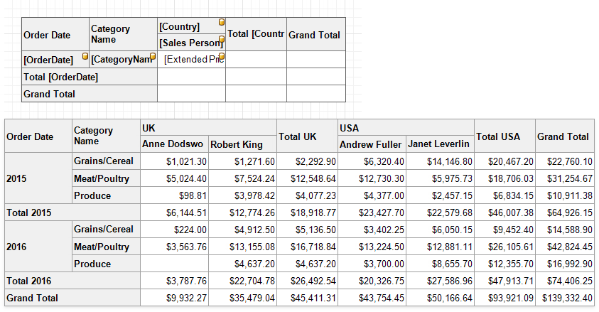

Use Cross Tabs
The Cross Tab control displays data in rows and columns. You can specify what data to use as row/column headers, and what data should be shown at row and column intersections. You can also determine how to group, sort, format and lay out data.

Refer to the following topics for instructions on how to use cross tabs in reports:
-
Explains how to add a Cross Tab to a report and bind a Cross Tab to data.
-
Describes the Cross Tab row fields, column fields, data fields, and how to format field values.
-
Demonstrates how to group, sort and filter a Cross Tab.
-
Shows how to adjust Cross Tab size, change header text, and specify how the control is printed.
-
Explains how to change Cross Tab element appearance settings.